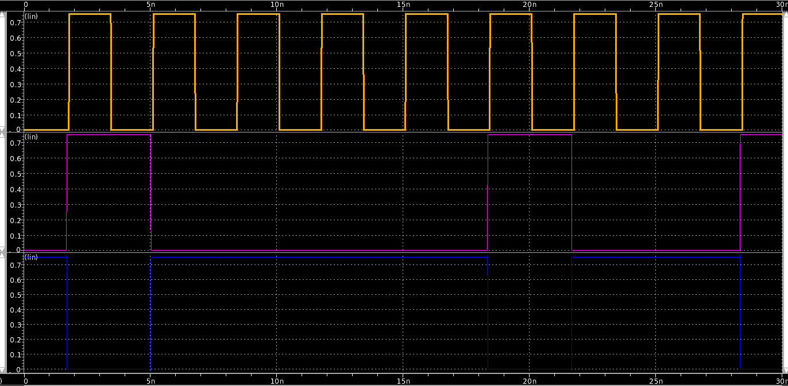

Adding a behavioral model
Output verification for an inverter
Let's add some test vector checking to the inverter example.
Generating values
We'll first change the Main module from using a clock as the input
to the inverter, to a digital source that can provide a pre-determined
sequence of values. This 'VerilogSrc' is
shown below:
| inverter_sim_01.py |
|---|
| from random import randint
from circuitbrew.module import Module
from circuitbrew.ports import InputPort, OutputPort
from circuitbrew.compound_ports import SupplyPort
from circuitbrew.fets import Nfet, Pfet
from circuitbrew.elements import Supply, VerilogClock, VerilogSrc
class Inverter(Module):
a = InputPort()
b = OutputPort()
p = SupplyPort()
def build(self):
vdd, gnd = self.p.vdd, self.p.gnd
self.pup = Pfet(g=self.a, d=vdd, s=self.b, b=vdd)
self.ndn = Nfet(g=self.a, d=self.b, s=gnd, b=gnd)
self.finalize()
class Main(Module):
def build(self):
# Voltage supply
self.supply = Supply(name='vdd', voltage=self.sim_setup['voltage'])
p = self.supply.p
vdd, gnd = p.vdd, p.gnd
# Change the clock to drive the VerilogSrc instead of the Inverter
self.clk_gen = VerilogClock('clk', freq=300e3, enable=vdd)
# Sequence of input test vectors on output node 'd'
self.src = VerilogSrc('src', [randint(0,1) for i in range(10)],
clk=self.clk_gen.clk, _reset=vdd)
inv_in = self.src.d
self.inv = Inverter('myinv', a=inv_in, p=p)
self.finalize()
|
The source module can take a list of values that it loops through and repeats during
simulation. In this example, we generate a vector of 10 1-bit values to source.
The waveform of this simulation is below. The top waveform is the source clock, and then below
is the input and output of the inverter.

Checking the values
Checking the expected values can be done using a ['VerilogBucket'][circuitbrew.elementes.VerilogBucket].
We provide the expected values list to the bucket by inverting the randomly generated
list supplied to the VerilogSrc:
| inverter_sim_02.py |
|---|
| from random import randint
from circuitbrew.module import Module
from circuitbrew.ports import InputPort, OutputPort
from circuitbrew.compound_ports import SupplyPort
from circuitbrew.fets import Nfet, Pfet
from circuitbrew.elements import Supply, VerilogClock, VerilogSrc, VerilogBucket
class Inverter(Module):
a = InputPort()
b = OutputPort()
p = SupplyPort()
def build(self):
vdd, gnd = self.p.vdd, self.p.gnd
self.pup = Pfet(g=self.a, d=vdd, s=self.b, b=vdd)
self.ndn = Nfet(g=self.a, d=self.b, s=gnd, b=gnd)
self.finalize()
class Main(Module):
def build(self):
# Voltage supply
self.supply = Supply(name='vdd', voltage=self.sim_setup['voltage'])
p = self.supply.p
vdd, gnd = p.vdd, p.gnd
# Change the clock to drive the VerilogSrc instead of the Inverter
self.clk_gen = VerilogClock('clk', freq=300e3, enable=vdd)
# Sequence of input test vectors on output node 'd'
vals = [randint(0,1) for i in range(10)]
self.src = VerilogSrc('src', values=vals,
clk=self.clk_gen.clk, _reset=vdd)
inv_in = self.src.d
self.inv = Inverter('myinv', a=inv_in, p=p)
# Expected values (invert the vals list)
expected = [1-v for v in vals]
# A sampling clock for checking expected output of the inverter
self.clk_buc = VerilogClock('clk_buc', freq=300e3, offset='100p', enable=vdd)
self.bucket = VerilogBucket(name='buc', values=expected,
clk=self.clk_buc.clk, _reset=vdd, d=self.inv.b)
self.finalize()
|
If you then look at the Verilog-A output file (top.valog if you're using hspice), you will
see the following output:
At time 1.78 ns verified 0th value 0 to test.dat
At time 5.11 ns verified 1th value 1 to test.dat
At time 8.44 ns verified 2th value 1 to test.dat
At time 11.78 ns verified 3th value 1 to test.dat
At time 15.11 ns verified 4th value 1 to test.dat
At time 18.44 ns verified 5th value 0 to test.dat
At time 21.78 ns verified 6th value 1 to test.dat
At time 25.11 ns verified 7th value 1 to test.dat
At time 28.44 ns verified 8th value 0 to test.dat
Using model simulation to generate expected vectors
While providing the expected values for a simple test case like this is trivial, the
real power of CircuitBrew lies in the ability to generate expected vectors from complex
circuits that instance multiple blocks.
To do this, CircuitBrew has a simple yet powerful discrete-event-simulation framework built in to it.
If you provide a method to implement a simulation model for each Module, then it
will execute the complete system model for your circuit instanced in Main and
generate the output values for each port. Assuming your model is correct, then
you can seamlessly use these output values as the expected values provided to
the HSPICE simulation.
For this particular example, we only need to provide a simulation model for the inverter, via an
async sim method.
| inverter_sim_03.py |
|---|
| from random import randint
from circuitbrew.module import Module
from circuitbrew.ports import InputPort, OutputPort
from circuitbrew.compound_ports import SupplyPort
from circuitbrew.fets import Nfet, Pfet
from circuitbrew.elements import Supply, VerilogClock, VerilogSrc, VerilogBucket
class Inverter(Module):
a = InputPort()
b = OutputPort()
p = SupplyPort()
def build(self):
vdd, gnd = self.p.vdd, self.p.gnd
self.pup = Pfet(g=self.a, d=vdd, s=self.b, b=vdd)
self.ndn = Nfet(g=self.a, d=self.b, s=gnd, b=gnd)
self.finalize()
async def sim(self):
while True:
val = await self.a.recv()
await self.b.send(1-val)
class Main(Module):
def build(self):
# Voltage supply
self.supply = Supply(name='vdd', voltage=self.sim_setup['voltage'])
p = self.supply.p
vdd, gnd = p.vdd, p.gnd
# Change the clock to drive the VerilogSrc instead of the Inverter
self.clk_gen = VerilogClock('clk', freq=300e3, enable=vdd)
# Sequence of input test vectors on output node 'd'
vals = [randint(0,1) for i in range(10)]
self.src = VerilogSrc('src', values=vals,
clk=self.clk_gen.clk, _reset=vdd)
inv_in = self.src.d
self.inv = Inverter('myinv', a=inv_in, p=p)
# A sampling clock for checking expected output of the inverter
self.clk_buc = VerilogClock('clk_buc', freq=300e3, offset='100p', enable=vdd)
self.bucket = VerilogBucket(name='buc', # values=expected, no longer needed
clk=self.clk_buc.clk, _reset=vdd, d=self.inv.b)
self.finalize()
|
While we'll delve into more detail on how model simulation works in a different
section, in general, every port has a recv and send method. In your sim method for
each block all you need to do is:
- call
await self.INPUTPORT.recv() to receive all the inputs to your port
- compute the outputs based on the inputs
- call
await self.OUTPUTPORT.send(output_val) on all the output ports to send the computed values
- repeat
We have to use the Python async keywords because the simulation methods relies on
concurrent event-based simulation libraries for execution of the sim code. Under the hood,
CircuitBrew currently uses the Curio async library,
although this may change in future iterations.
For every Module that doesn't provide a sim method, CircuitBrew will execute the default
behavior which is to forward all values received on an InputPort to its fanout connections
transparently.
If you execute this example, it will run the same way in HSPICE as the last example, except
you don't generate and provide expected vectors in the Main method.
In the next example, we will take a look at a more complicated example.
{kind=link}